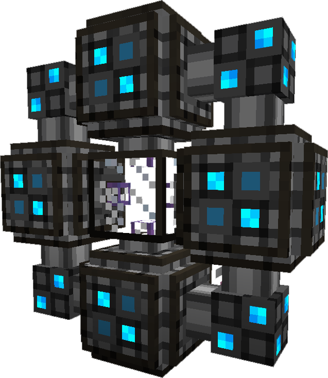

A multiblock structure that connects 2 potentially distant network fragments together. Created by crafting 8 ME Quantum Ring and a ME Quantum Link Chamber and placing the ME Quantum Link Chamber in the center, and sourrounding it in the 8 ME Quantum Ring.
Each Quantum Network Bridge requires power to function. This power must be provided from the network fragment it is attached to until the bridge is linked; at which time power from either side will be available. However if power is lost, connectivity will fail and power will be drained from the side the bridge is on in attempt to restore connection.
When the Quantum Network Bridge is powered, the various blue lights on the sturucture will turn on and glow. The Quantum Network Bridge requires 200 AE/t ( 100 EU/t, 400 RF/t )
To establish a link between 2 Quantum Network Bridges, you must create a pair of Quantum Entangled Singularity. One of each will be placed inside of a particular connection. Each Bridge may only connect to one other bridge.
You might consider renaming your Quantum Entangled Singularity to better identify the connection.
| Last modified on 05/22/2015 10:31 AM CDT By thatsIch |